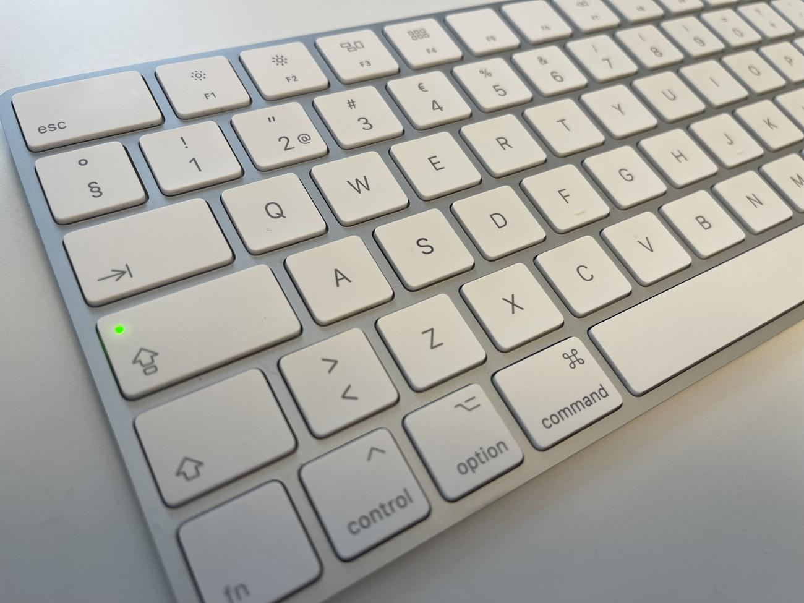

Klaviatuur ehk sõrmistik on arvuti sisendseade, millel on sõrmedega vajutatavad klahvid ehk sõrmised, mis töötavad kas mehaaniliste hoobade või elektriliste lülititena.
Vaatamata arvutihiire ja puuteekraani arengule ning arvutustehnika kiiruse kasvule on klaviatuur jäänud kõige kasutatavamaks ja mitmekülgsemaks seadmeks, mis võimaldab inimestel arvutiga suhelda.

Kodulehele